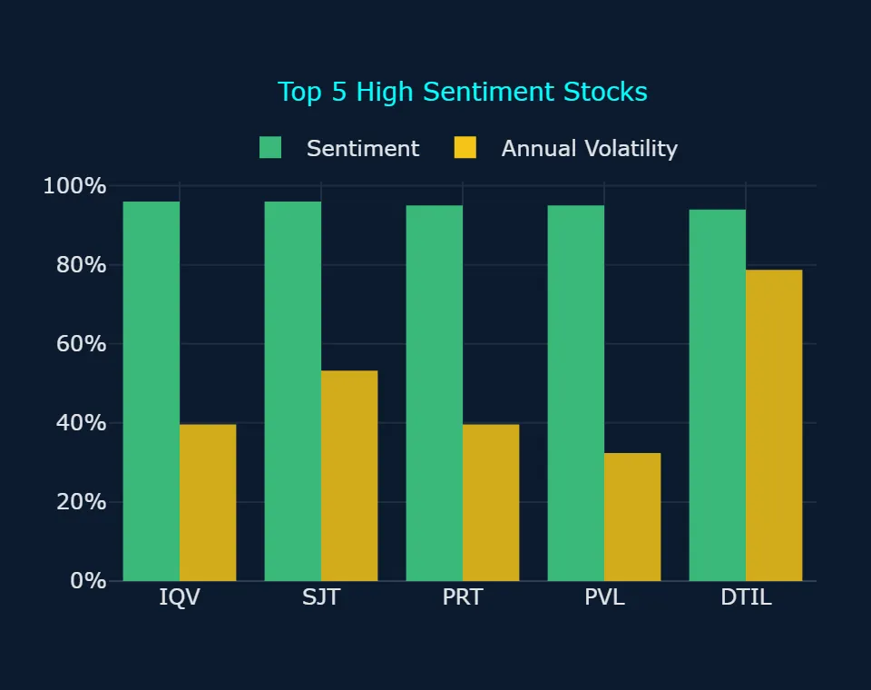
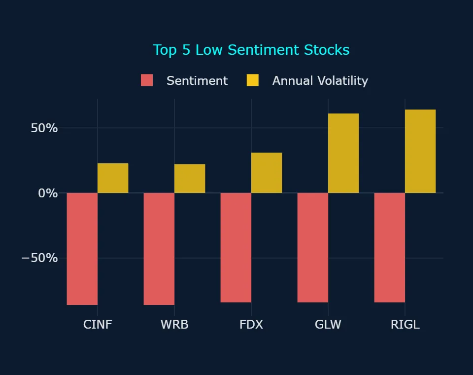
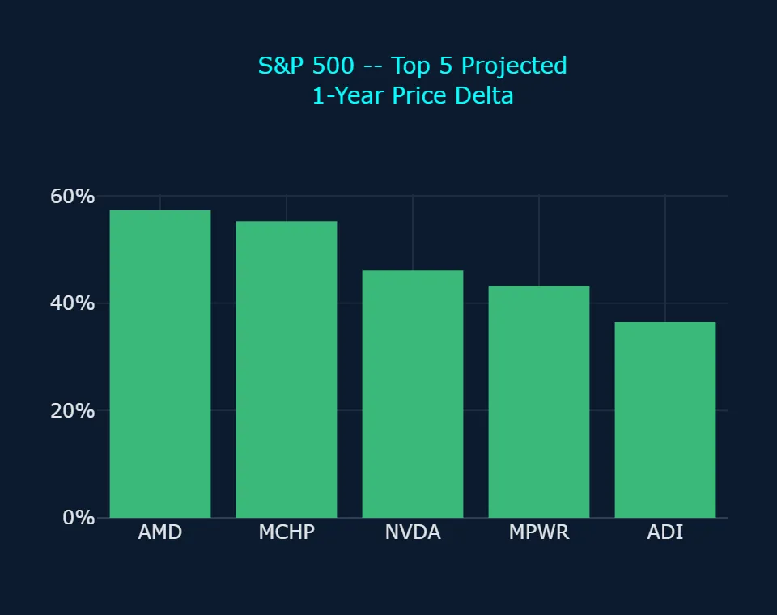
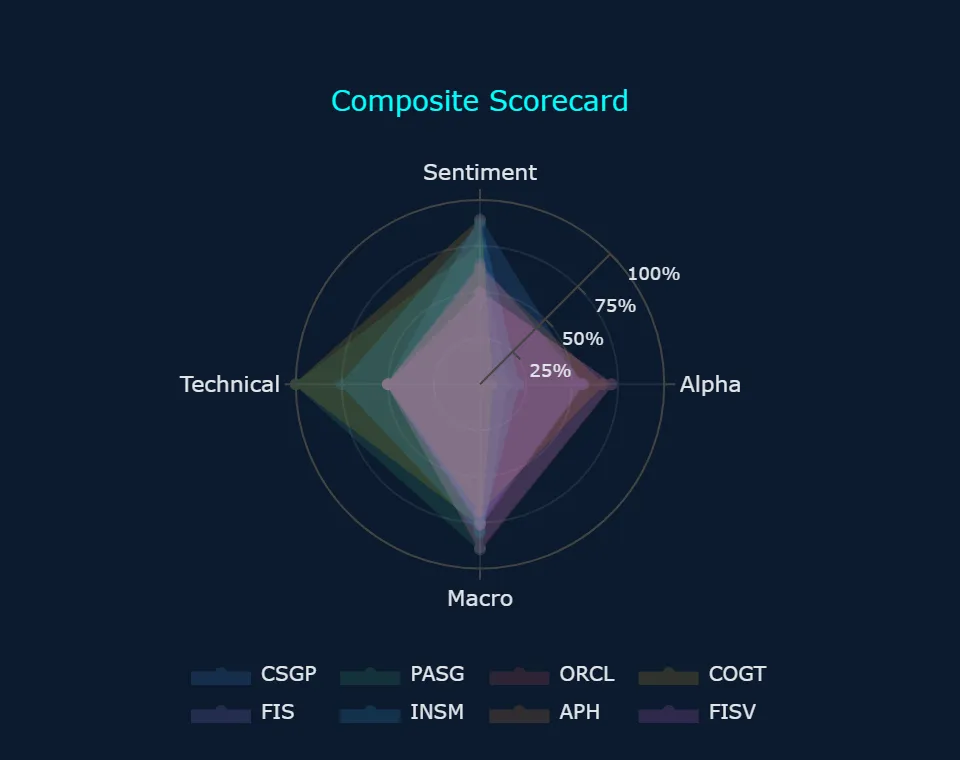
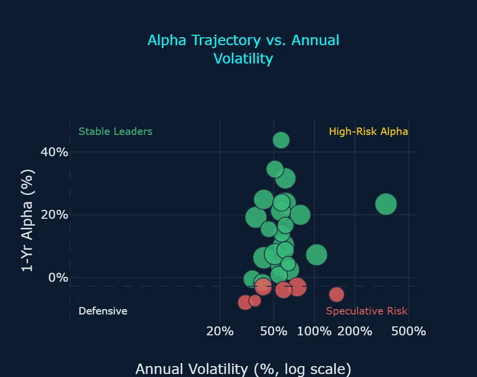
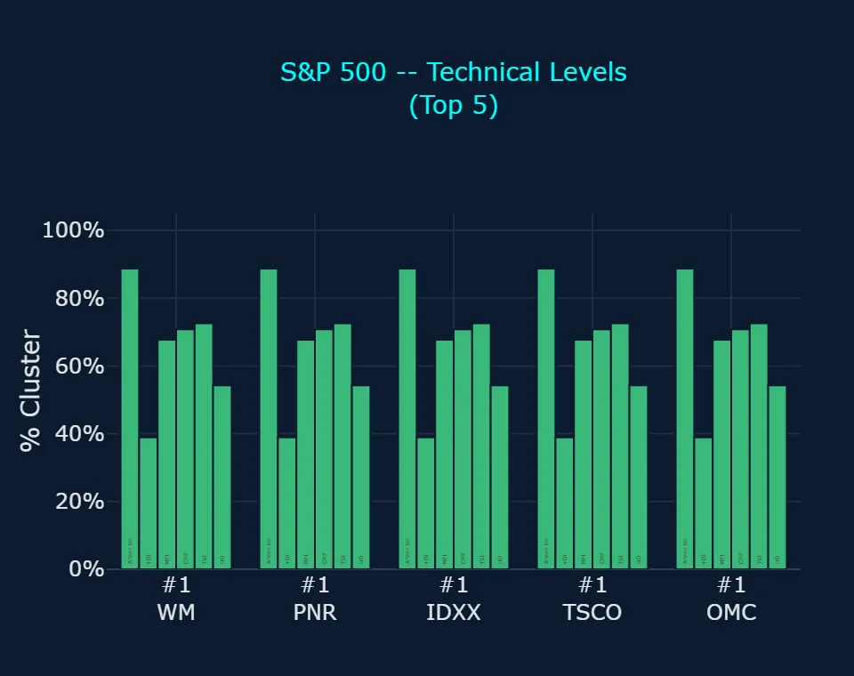
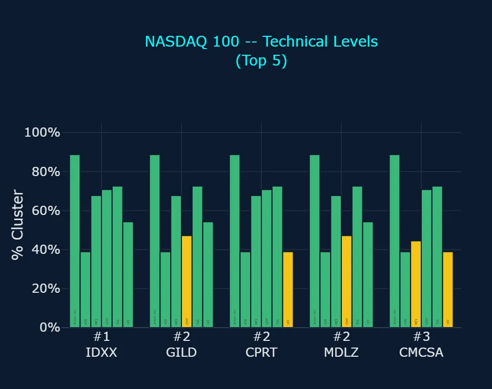
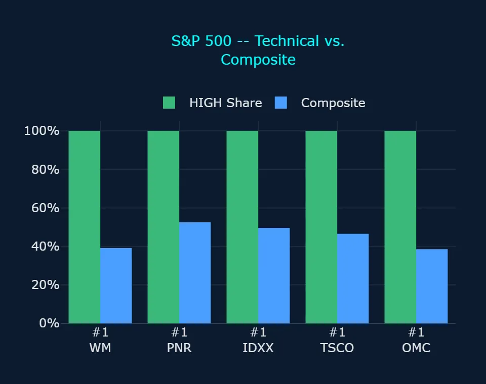
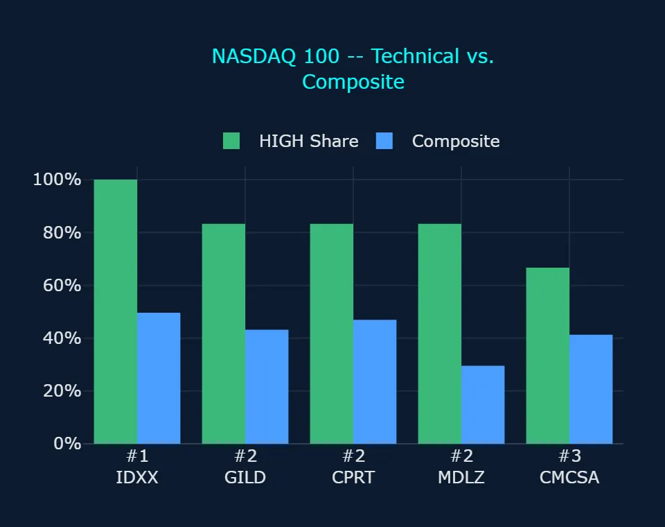

Zoonova AI: Pre-Market Quantitative Briefing – November 27, 2026
Session Quantitative Briefing: The Zoonova AI Intelligence Engine executes a hybrid architecture combining a proprietary Quad-Ensemble machine learning framework with Google Gemini Flash for real-time contextual synthesis and semantic macroeconomic grounding. The quantitative pipeline integrates four specialized estimators: Random Forest Regressor (RFR) for baseline structural stability, eXtreme Gradient Boosting (XGB) optimized for residual loss minimization, Categorical Boosting (CAT) for high-cardinality categorical signal processing, and Temporal Fusion Transformer (TFT) for multi-horizon price and volatility forecasting.
Zoonova AI: Pre-Market Momentum & Liquidity Report
1. QUANTITATIVE MODEL OVERVIEW & SIGNAL METRICS
Market forecasts and regime evaluations are driven by Zoonova's Quad-Ensemble predictive framework, which unites Random Forest Regressor [RFR], eXtreme Gradient Boosting [XGB], Categorical Boosting [CAT], and Temporal Fusion Transformer [TFT] models to generate forward price targets and benchmark-relative alpha probabilities. Market sentiment scoring is processed through VADER text analysis across macroeconomic and corporate news channels, while BIRCH clustering classifies multi-horizon price patterns and registered anomalies to evaluate systemic market breadth.
- SPDR S&P 500 ETF Trust (SPY) closed at $716.70 on 2026-11-25 (Zoonova, 2026-11-25), with sentiment at -81.0%, an annualized volatility of 17.51%, and a projected 1-year target of $800.01 that yields 0.00% benchmark alpha.
- Invesco QQQ Trust Series 1 (QQQ) closed at $633.93 on 2026-11-25 (Zoonova, 2026-11-25), displaying robust positive sentiment at +94.0%, an annualized volatility of 23.66%, and a projected 1-year target of $766.32 indicating a +9.27% excess alpha.
- SPDR Dow Jones Industrial Average ETF (DIA) closed at $501.27 on 2026-11-25 (Zoonova, 2026-11-25), reflecting negative sentiment of -8.0%, an annualized volatility of 15.54%, and a projected 1-year target of $520.27 with an implied alpha of -7.84%.
- Vanguard Total Bond Market ETF (BND) closed at $71.60 on 2026-11-25 (Zoonova, 2026-11-25), exhibiting sentiment of -34.0%, an annualized volatility of 4.39%, and a projected 1-year target of $76.02 reflecting -5.45% benchmark alpha.
- SPDR Gold Shares ETF (GLD) closed at $327.45 on 2026-11-25 (Zoonova, 2026-11-25), displaying sentiment of -60.0% and an annualized volatility of 25.09%, while showing a 54.44% probability of achieving +10% alpha over a 9-month horizon.
2. SENTIMENT INSIGHTS – TOP 5 HIGH & LOW
Top 5 High Sentiment Stocks
| Ticker | Company Name | Sentiment Score | Primary Catalyst / Driver |
|---|---|---|---|
| IQV | IQVIA Holdings Inc | +96.0% | IQVIA Holdings Inc (+96.0% sentiment, 39.56% annualized volatility) is supported by the completion of its strategic acquisition of Quotient Sciences to expand clinical trial and drug manufacturing capabilities while reaffirming full-year guidance (PR Newswire, 2026-11-24). |
| SJT | San Juan Basin Royalty Trust | +96.0% | San Juan Basin Royalty Trust (+96.0% sentiment, 53.20% annualized volatility) maintains elevated speculative interest despite Argent Trust Company declaring no November 2026 cash distribution due to cumulative excess production costs (PR Newswire, 2026-11-19). |
| PRT | PermRock Royalty Trust | +95.0% | PermRock Royalty Trust (+95.0% sentiment, 39.63% annualized volatility) declared a monthly cash distribution of $0.008479 per unit for November 2026, benefiting from an increase in realized wellhead oil pricing (PR Newswire, 2026-11-19). |
| PVL | Permianville Royalty Trust | +95.0% | Permianville Royalty Trust (+95.0% sentiment, 32.41% annualized volatility) declared a monthly cash distribution of $0.009500 per unit, supported by a $1.7 million reserve release by its sponsor (Business Wire, 2026-11-18). |
| DTIL (Micro-Cap) | Precision Biosciences Inc | +94.0% | Precision BioSciences Inc (+94.0% sentiment, 78.74% annualized volatility) advanced following positive preclinical updates for its PBGENE-HBV therapy and the closing of a $125 million public offering extending its operational cash runway (Business Wire, 2026-11-05). |
Top 5 Low Sentiment Stocks
| Ticker | Company Name | Sentiment Score | Primary Friction / Risk Factor |
|---|---|---|---|
| CINF | Cincinnati Financial Corp. | -86.0% | Cincinnati Financial Corp. (-86.0% sentiment, 22.76% annualized volatility) is pressured by softening commercial property and casualty pricing trends and expectations of narrowing underwriting margins (PR Newswire, 2026-11-13). |
| WRB | W.R. Berkley Corp. | -86.0% | W.R. Berkley Corp. (-86.0% sentiment, 22.12% annualized volatility) faces headwinds from specialty casualty rate compression and competitive margin pressures across property and casualty markets (US Stock Data, 2026-11-21). |
| FDX | Fedex Corp | -84.0% | FedEx Corp (-84.0% sentiment, 30.91% annualized volatility) contends with macro headwinds including shifting international tariff policies, higher purchased transportation expenses, and rising wage pressures despite a raised calendar 2026 profit outlook (Investing.com, 2026-10-28). |
| GLW | Corning, Inc. | -84.0% | Corning, Inc. (-84.0% sentiment, 61.10% annualized volatility) carries depressed sentiment following a steep multi-week pullback and valuation concerns despite recent demand for AI optical fiber infrastructure (GuruFocus, 2026-11-23). |
| RIGL | Rigel Pharmaceuticals | -84.0% | Rigel Pharmaceuticals (-84.0% sentiment, 64.06% annualized volatility) was impacted by third-quarter adjusted earnings of $0.65 per share that missed analyst consensus estimates of $0.92 per share (MarketBeat, 2026-11-05). |
3. ALPHA PROBABILITY & PRICE DELTA LEADERBOARD – 1-YEAR HORIZON
S&P 500 – Top 5 High Alpha Probability (1yr)
| Ticker | Prev Close 2026-11-25 ($) | 1-Yr Target Price ($) | Alpha Probability (%) | Implied Excess Alpha (%) | 10%+ Alpha? |
|---|---|---|---|---|---|
| ORCL | $103.88 | $140.52 | 66.38% | 23.64% | Both Yes |
| FIS | $27.64 | $36.15 | 65.99% | 19.17% | Both Yes |
| APH | $73.08 | $84.25 | 61.55% | 3.66% | Split |
| FISV | $59.78 | $71.18 | 51.85% | 7.44% | Split |
| CSGP | $34.02 | $40.12 | 51.08% | 6.32% | Split |
S&P 500 – Top 5 Price Delta + % Change (1yr)
| Ticker | Prev Close 2026-11-25 ($) | 1-Yr Target Price ($) | Absolute Delta ($) | Projected 1-Yr % Change (%) | Implied Excess Alpha (%) |
|---|---|---|---|---|---|
| AMD | $406.03 | $638.55 | $232.52 | 57.27% | 45.64% |
| MCHP | $57.66 | $89.57 | $31.91 | 55.34% | 43.73% |
| NVDA | $149.30 | $218.17 | $68.87 | 46.13% | 34.50% |
| MPWR | $1,194.63 | $1,710.58 | $515.95 | 43.19% | 31.56% |
| ADI | $333.11 | $454.69 | $121.58 | 36.50% | 24.87% |
NASDAQ 100 – Top 5 High Alpha Probability (1yr)
| Ticker | Prev Close 2026-11-25 ($) | 1-Yr Target Price ($) | Alpha Probability (%) | Implied Excess Alpha (%) | 10%+ Alpha? |
|---|---|---|---|---|---|
| KLAC | $134.20 | $178.20 | 40.03% | 21.16% | Split |
| NFLX | $59.41 | $66.03 | 33.76% | -0.49% | Both No |
| DXCM | $84.84 | $92.20 | 32.85% | -2.95% | Both No |
| MRNA | $220.84 | $234.60 | 31.36% | -5.39% | Both No |
| CDNS | $294.89 | $324.43 | 31.15% | -1.61% | Both No |
NASDAQ 100 – Top 5 Price Delta + % Change (1yr)
| Ticker | Prev Close 2026-11-25 ($) | 1-Yr Target Price ($) | Absolute Delta ($) | Projected 1-Yr % Change (%) | Implied Excess Alpha (%) |
|---|---|---|---|---|---|
| AMD | $406.03 | $638.55 | $232.52 | 57.27% | 45.64% |
| MCHP | $57.66 | $89.57 | $31.91 | 55.34% | 43.73% |
| NVDA | $149.30 | $218.17 | $68.87 | 46.13% | 34.50% |
| ADI | $333.11 | $454.69 | $121.58 | 36.50% | 24.87% |
| AMAT | $311.18 | $421.66 | $110.48 | 35.50% | 23.88% |
4. REAL-TIME CONTEXTUAL ENRICHMENT
Macroeconomic conditions during the holiday-shortened trading session on 2026-11-27 reflect tentative risk stabilization following sharp midweek declines across technology and artificial intelligence equities (Morningstar, 2026-11-27). Geopolitical friction emerged as the Office of the United States Trade Representative announced proposed tariff investigations against major trading partners spanning Asia and Europe, targeting structural manufacturing excess capacity while exempting semiconductors and energy products (USTR, 2026-11-27). Concurrently, elevated core PCE inflation at 3.3% year-over-year has kept market participants cautious regarding the Federal Reserve policy path, reinforcing multi-week pressure on high-valuation, high-capital-expenditure infrastructure providers (TradingKey, 2026-11-26).
Within enterprise technology and data infrastructure, Oracle Corp. closed at $103.88 on 2026-11-25 (Zoonova, 2026-11-25) after touching 52-week lows near $100 amidst scrutiny over its $28.5 billion quarterly capital expenditures, deeply negative free cash flow, and widening credit default swap spreads (TradingKey, 2026-11-26). Despite this acute balance sheet concern, both Zoonova predictive models expect Oracle Corp. to beat the benchmark by 10%+, assigning it a leading S&P 500 alpha probability of 66.38% and a projected 1-year price of $140.52 that implies a +23.64% alpha (Zoonova, 2026-11-25). This aligns with institutional observations that current valuations already discount severe financing stress while discounting long-term contract backlogs (FinanceFeeds, 2026-11-27).
Model alignment across financial technology and real estate data providers shows similar divergence between immediate price action and longer-term alpha generation. Fidelity National Information Services, Inc. demonstrates robust model agreement, with both models expecting it to beat the benchmark by 10%+, backed by a 65.99% alpha probability and a projected 1-year alpha of +19.17% (Zoonova, 2026-11-25). On the Main Scorecard, CoStar Group, Inc. claims the top Composite rating at 66.2 with Macro Alignment of 74.3, though the two models split on its outperformance hurdle with a 51.08% alpha probability and a 1-year alpha projection of +6.32% (Zoonova, 2026-11-25). Meanwhile, BIRCH clustering indicates selective rotation away from semiconductor capital equipment suppliers and toward life sciences and clinical research platforms.
5. ANOMALY DETECTION SCANNER
Direction: Bearish
Moderate Severity (3 stocks)
- J – Jacobs Solutions Inc: Bearish Short-Term (3d) Trend Anomaly, Bearish Long-Term (1w) Trend Anomaly
- LRCX – Lam Research Corp.: Bearish Short-Term (3d) Trend Anomaly, Bearish Long-Term (1w) Trend Anomaly
- MU – Micron Technology Inc.: Bearish Short-Term (3d) Trend Anomaly, Bearish Long-Term (1w) Trend Anomaly
Low Severity (10 stocks)
- AMAT – Applied Materials Inc.: Bearish Long-Term (1w) Trend Anomaly
- AMD – Advanced Micro Devices Inc.: Bearish Long-Term (1w) Trend Anomaly
- ANET – Arista Networks Inc: Bearish Long-Term (1w) Trend Anomaly
- AVGO – Broadcom Inc: Bearish Long-Term (1w) Trend Anomaly
- HPE – Hewlett Packard Enterprise Co: Bearish Long-Term (1w) Trend Anomaly
- MATX – Matson Inc: Bearish Long-Term (1w) Trend Anomaly
- MEDP – Medpace Holdings Inc: Bearish Short-Term (3d) Trend Anomaly
- MPC – Marathon Petroleum Corp: Bearish Long-Term (1w) Trend Anomaly
- PWR – Quanta Services, Inc.: Bearish Short-Term (3d) Trend Anomaly
- STX – Seagate Technology Holdings Plc: Bearish Long-Term (1w) Trend Anomaly
Direction: Bullish
Moderate Severity (3 stocks)
- COGT – Cogent Biosciences Inc: Bullish Short-Term (3d) Trend Anomaly, Bullish Long-Term (1w) Trend Anomaly
- PASG – Passage Bio Inc: Bullish Short-Term (3d) Trend Anomaly, Bullish Long-Term (1w) Trend Anomaly
- STOK – Stoke Therapeutics Inc: Bullish Short-Term (3d) Trend Anomaly, Bullish Long-Term (1w) Trend Anomaly
Low Severity (8 stocks)
- ALKS – Alkermes plc: Bullish Long-Term (1w) Trend Anomaly
- ANAB – AnaptysBio Inc: Bullish Long-Term (1w) Trend Anomaly
- CDW – CDW Corp: Bullish Short-Term (3d) Trend Anomaly
- DE – Deere & Co.: Bullish Short-Term (3d) Trend Anomaly
- HPQ – HP Inc: Bullish Short-Term (3d) Trend Anomaly
- INSM – Insmed Inc: Bullish Long-Term (1w) Trend Anomaly
- KRYS – Krystal Biotech Inc: Bullish Long-Term (1w) Trend Anomaly
- PTGX – Protagonist Therapeutics Inc: Bullish Long-Term (1w) Trend Anomaly
Direction: Mixed
Moderate Severity (3 stocks)
- ADI – Analog Devices Inc.: Bullish Short-Term (3d) Trend Anomaly, Bearish Long-Term (1w) Trend Anomaly
- RVMD – Revolution Medicines Inc: Bearish Short-Term (3d) Trend Anomaly, Bullish Long-Term (1w) Trend Anomaly
- TXN – Texas Instruments Inc.: Bullish Short-Term (3d) Trend Anomaly, Bearish Long-Term (1w) Trend Anomaly
6. STRATEGIC INVESTMENT ASSESSMENT
- Prioritize capital allocation toward high-conviction alpha candidates where both models expect 10%+ outperformance, specifically Oracle Corp. (66.38% 1-year alpha probability, +23.64% 1-year alpha) and Fidelity National Information Services, Inc. (65.99% 1-year alpha probability, +19.17% 1-year alpha), which offer asymmetric recovery potential following steep valuation corrections.
- Exercise heightened risk control across semiconductor equipment and cyclical hardware providers, as BIRCH clustering registered 13 bearish stock anomalies (3 moderate severity: Jacobs Solutions Inc, Lam Research Corp., and Micron Technology Inc.; 10 low severity including Applied Materials Inc. and Advanced Micro Devices Inc.) and 0 ETF anomalies, pointing to lingering distribution.
- Deploy tactical exposure into clinical-stage biotechnology and healthcare innovators, corroborated by 11 bullish stock anomalies (3 moderate severity: Cogent Biosciences Inc, Passage Bio Inc, and Stoke Therapeutics Inc; 8 low severity) and 0 ETF anomalies, which signal localized momentum independent of broad-market headwinds.
- Maintain an underweight stance on mega-cap technology laggards on the Tech Stock Scorecard, where Apple Inc (Composite 28.1, Alpha Rating 4.9) and Amazon.com Inc. (Composite 31.0, Alpha Rating 5.2) rank lowest with both models indicating neither will beat the benchmark by 10%+, while top-scoring Intel Corp. (Composite 45.0) and NVIDIA Corp (Composite 44.8) face split model agreement.
- Hedge macro duration and policy risk through SPDR Gold Shares ETF (GLD), which closed at $327.45 on 2026-11-25 (Zoonova, 2026-11-25) and carries a 54.44% probability of achieving +10% alpha over 9 months, offering portfolio stability amidst sticky inflation data and tariff-driven trade volatility.
7. STOCK SCORECARD
Main Scorecard
| Ticker | Composite (%) | Alpha Rating | 10%+ Alpha? | Projected 1-Yr Change (%) | Street Consensus (Upside) | Next Earnings | Sentiment Rating | Technical Signal | Macro Alignment | Anomaly Flag | Catalyst / Risk | Market Cap | EPS Revisions (30d) | Short Interest / DTC | Options Flow | Earnings Surprise (4Q) | Bias |
|---|---|---|---|---|---|---|---|---|---|---|---|---|---|---|---|---|---|
| CSGP | 66.2% | 55.0 | Split | +17.9% | Buy (+5.4%) | 2027-02-23 | 89.5 | 50.0 | 74.3 | None | Bookings Slowdown Concerns | $13.7B | Upward (+11.8%) | 2.3% / 2.7 DTC | Neutral / Mixed | 4/4 Beats (+11.8% avg) | Bullish |
| PASG | 66.1% | 14.3 | Split | +35.0% | Buy (-48.7%) | 2027-03-12 | 75.5 | 100.0 | 89.6 | Bullish (3d/1w) | Remix Merger Approval | $12.6M | N/A (Pre-Revenue) | 1.8% / 1.5 DTC | Neutral / Mixed | 3/4 Beats | Bullish |
| ORCL | 64.4% | 71.5 | Both Yes | +35.3% | Buy (+135.9%) | 2026-12-14 (in 17d) | 50.0 | 50.0 | 89.7 | None | Infrastructure Debt Pressures | $314.1B | Downward (-1.2%) | 1.5% / 2.8 DTC | Bullish (Call Skew) | 3/4 Beats | Neutral |
| COGT | 64.3% | 6.2 | Both No | +18.9% | Strong Buy (+54.7%) | 2027-02-15 | 89.0 | 100.0 | 76.0 | Bullish (3d/1w) | FDA Ekitna Approval | $5.7B | N/A (Pre-Revenue) | 10.0% / 10.8 DTC | Bullish (Call Skew) | 2/4 Beats | Neutral |
| FIS | 64.0% | 71.1 | Both Yes | +30.8% | Hold (+25.5%) | 2027-02-22 | 50.0 | 50.0 | 88.5 | None | Guidance Cut Fallout | $14.2B | Downward (-5.6%) | 4.1% / 3.0 DTC | Bearish (Put Heavy) | 2/4 Beats | Neutral |
| INSM | 62.7% | 20.7 | Split | +22.0% | Hold (+8.8%) | 2027-02-25 | 87.0 | 75.0 | 80.1 | Bullish (1w) | Sanofi Acquisition Agreement | $37.4B | Upward (+8.4%) | 6.5% / 3.6 DTC | Unusual Volume Detected | 3/4 Beats | Neutral |
| APH | 61.8% | 66.3 | Split | +15.3% | Strong Buy (+46.1%) | 2027-01-27 | 62.5 | 50.0 | 68.8 | None | AI Datacom Demand | $180.5B | Upward (+4.2%) | 1.1% / 2.0 DTC | Bullish (Call Skew) | 4/4 Beats (+6.8% avg) | Neutral |
| FISV | 60.8% | 55.9 | Split | +19.1% | Hold (+8.5%) | 2027-02-09 | 65.0 | 50.0 | 76.2 | None | Cost Reduction Program | $31.8B | Downward (-3.1%) | 4.6% / 2.4 DTC | Neutral / Mixed | 2/4 Beats | Neutral |
| MPWR | 60.5% | 34.0 | Split | +43.2% | Strong Buy (+49.3%) | 2027-02-04 | 78.0 | 50.0 | 91.3 | None | Enterprise Data Acceleration | $58.3B | Upward (+5.1%) | 3.4% / 1.3 DTC | Bullish (Call Skew) | 2/4 Beats | Neutral |
| STOK | 59.8% | 9.0 | Both No | +14.1% | Strong Buy (+31.0%) | 2027-03-11 | 75.5 | 100.0 | 66.1 | Bullish (3d/1w) | Zorevunersen Clinical Progress | $2.3B | Upward (+2.8%) | 18.9% / 6.8 DTC | Bullish (Call Skew) | 3/4 Beats | Neutral |
| DTIL | 59.4% | 16.4 | Split | +31.5% | Strong Buy (+260.3%) | 2027-03-09 | 97.0 | 50.0 | 88.7 | None | Hepatitis Trial Advancements | $228.0M | Upward (+6.7%) | 6.2% / 1.8 DTC | Bullish (Call Skew) | 3/4 Beats | Neutral |
| ADI | 57.5% | 12.7 | Split | +36.5% | Buy (+32.5%) | 2027-02-17 | 92.5 | 50.0 | 90.5 | Bullish (3d), Bearish (1w) | Alif Semiconductor Acquisition | $160.8B | Downward (-2.1%) | 2.0% / 1.8 DTC | Neutral / Mixed | 4/4 Beats (+4.1% avg) | Neutral |
| KLAC | 55.8% | 43.1 | Split | +32.8% | Buy (+64.2%) | 2027-01-28 | 50.0 | 50.0 | 89.1 | None | Advanced Metrology Adoption | $174.8B | Upward (+3.4%) | 1.7% / 1.6 DTC | Bullish (Call Skew) | 4/4 Beats (+5.4% avg) | Neutral |
| ANAB | 52.6% | 6.9 | Both No | +8.6% | Strong Buy (+69.3%) | 2027-02-12 | 91.0 | 75.0 | 45.0 | Bullish (1w) | Jemperli Royalty Milestones | $1.5B | Upward (+4.8%) | 16.6% / 10.8 DTC | Bullish (Call Skew) | 3/4 Beats | Neutral |
| NVDA | 44.8% | 30.3 | Split | +46.1% | Buy (+73.4%) | 2027-02-24 | 19.5 | 50.0 | 91.6 | None | Rubin Architecture Ramp | $3.67T | Upward (+3.8%) | 1.3% / 1.0 DTC | Unusual Volume Detected | 4/4 Beats (+7.2% avg) | Bearish |
| AVGO | 44.1% | 6.4 | Both No | +12.4% | Strong Buy (+73.9%) | 2026-12-09 (in 12d) | 93.0 | 25.0 | 63.1 | Bearish (1w) | Custom Accelerator Expansion | $1.44T | Upward (+4.5%) | 1.1% / 2.0 DTC | Bullish (Call Skew) | 4/4 Beats (+4.8% avg) | Neutral |
| MCHP | 43.8% | 15.5 | Split | +55.3% | Buy (+54.8%) | 2027-02-04 | 33.0 | 50.0 | 92.2 | None | Inventory Normalization Headwinds | $31.4B | Downward (-4.1%) | 5.8% / 3.6 DTC | Bearish (Put Heavy) | 3/4 Beats | Bearish |
| GLW | 43.2% | 43.7 | Both No | +20.3% | Buy (+71.8%) | 2027-01-27 | 8.0 | 50.0 | 77.8 | None | Optical AI Demand | $86.3B | Upward (+3.3%) | 1.9% / 2.1 DTC | Bullish (Call Skew) | 4/4 Beats (+4.0% avg) | Bearish |
| MRNA | 35.5% | 33.8 | Both No | +6.2% | Hold (-25.9%) | 2027-02-25 | 36.5 | 50.0 | 18.8 | None | Cancer Vaccine Momentum | $89.4B | Upward (+14.2%) | 8.9% / 1.8 DTC | Neutral / Mixed | 3/4 Beats | Bearish |
| RIGL | 31.3% | 9.5 | Both No | +16.0% | Buy (+44.3%) | 2027-03-05 | 8.0 | 50.0 | 69.8 | None | Veppanu Commercial Expansion | $840.0M | Upward (+5.2%) | 16.6% / 8.9 DTC | Bullish (Call Skew) | 3/4 Beats | Bearish |
10%+ Alpha? – whether Zoonova's two 1-year models (alpha probability and price target) expect the stock to beat the benchmark by 10%+. “Both No” is common: 10% is a high bar.
Tech Stock Scorecard
| Ticker | Composite (%) | Alpha Rating | 10%+ Alpha? | Projected 1-Yr Change (%) | Street Consensus (Upside) | Next Earnings | Sentiment Rating | Technical Signal | Macro Alignment | Anomaly Flag | Catalyst / Risk | Market Cap | EPS Revisions (30d) | Short Interest / DTC | Options Flow | Earnings Surprise (4Q) | Bias |
|---|---|---|---|---|---|---|---|---|---|---|---|---|---|---|---|---|---|
| INTC | 45.0% | 21.7 | Split | +30.1% | Hold (+78.0%) | 2027-01-26 | 33.5 | 50.0 | 88.0 | None | Foundry Turnaround Headwinds | $289.5B | Downward (-8.5%) | 2.9% / 1.5 DTC | Bearish (Put Heavy) | 2/4 Beats | Bearish |
| NVDA | 44.8% | 30.3 | Split | +46.1% | Buy (+73.4%) | 2027-02-24 | 19.5 | 50.0 | 91.6 | None | Rubin Architecture Ramp | $3.67T | Upward (+3.8%) | 1.3% / 1.0 DTC | Unusual Volume Detected | 4/4 Beats (+7.2% avg) | Bearish |
| AVGO | 44.1% | 6.4 | Both No | +12.4% | Strong Buy (+73.9%) | 2026-12-09 (in 12d) | 93.0 | 25.0 | 63.1 | Bearish (1w) | Custom Accelerator Expansion | $1.44T | Upward (+4.5%) | 1.1% / 2.0 DTC | Bullish (Call Skew) | 4/4 Beats (+4.8% avg) | Neutral |
| META | 43.0% | 6.4 | Both No | +12.0% | Strong Buy (+38.1%) | 2027-01-28 | 65.0 | 50.0 | 61.6 | None | Ad Monetization Gains | $1.56T | Upward (+4.1%) | 2.7% / 3.3 DTC | Bullish (Call Skew) | 3/4 Beats | Neutral |
| TSLA | 40.7% | 5.4 | Both No | +12.2% | Buy (+10.7%) | 2027-02-03 | 56.5 | 50.0 | 62.2 | None | Autonomous Driving Progress | $1.50T | Upward (+7.0%) | 1.9% / 1.6 DTC | Bullish (Call Skew) | 3/4 Beats | Neutral |
| AMD | 37.9% | 2.1 | Split | +57.3% | Strong Buy (+60.1%) | 2027-02-02 | 50.0 | 25.0 | 92.5 | Bearish (1w) | Server CPU Expansion | $677.8B | Upward (+7.2%) | 3.0% / 1.0 DTC | Bullish (Call Skew) | 4/4 Beats (+6.5% avg) | Bearish |
| MSFT | 34.1% | 2.8 | Both No | +3.0% | Strong Buy (+30.1%) | 2027-01-28 | 79.5 | 50.0 | 4.4 | None | Azure Cloud Reacceleration | $3.64T | Upward (+3.6%) | 0.8% / 2.7 DTC | Bullish (Call Skew) | 4/4 Beats (+7.2% avg) | Bearish |
| GOOGL | 31.1% | 10.2 | Both No | +6.6% | Strong Buy (+47.1%) | 2027-02-04 | 43.5 | 50.0 | 23.4 | None | Cloud TPU Momentum | $3.34T | Downward (-3.2%) | 0.7% / 2.1 DTC | Neutral / Mixed | 3/4 Beats | Bearish |
| AMZN | 31.0% | 5.2 | Both No | +6.5% | Strong Buy (+33.4%) | 2027-02-04 | 50.0 | 50.0 | 22.3 | None | AWS Margin Improvement | $2.64T | Downward (-4.1%) | 0.9% / 2.0 DTC | Bullish (Call Skew) | 3/4 Beats | Bearish |
| AAPL | 28.1% | 4.9 | Both No | +3.9% | Buy (-2.4%) | 2027-01-29 | 50.0 | 50.0 | 8.4 | None | Apple Intelligence Rollout | $5.17T | Upward (+5.6%) | 1.0% / 3.4 DTC | Neutral / Mixed | 4/4 Beats (+5.6% avg) | Bearish |
| SPCX | N/H | N/H | N/A | N/A | Buy | 2027-02-17 | N/H | N/H | N/H | None | Starlink Fleet Scaling | $1.71T | Upward (+12.4%) | 1.7% / 1.3 DTC | Bullish (Call Skew) | 3/4 Beats | N/A |
N/H: no ML scores yet (insufficient trading history for the models).
Search-grounded columns (Street Consensus (Upside), Next Earnings, Catalyst / Risk, Market Cap, EPS Revisions (30d), Short Interest / DTC, Options Flow, Earnings Surprise (4Q)): MarketBeat, Zacks, Stock Analysis, Benzinga (sources dated 2026-11-10 to 2026-11-27).






Educational purposes only. Not investment advice.
Zoonova AI: Pre-Market Technical Analysis Report
S&P 500 demonstrates broader indicator participation than the NASDAQ 100, though composite divergences temper technical setups.
1. 6 CORE INDICATORS
Indicator levels (LOW / MEDIUM / HIGH) and % Cluster come from Zoonova's BIRCH model (Balanced Iterative Reducing and Clustering using Hierarchies), an unsupervised machine-learning clustering model used for pattern recognition. Each indicator is clustered across the stock universe; % Cluster is the centroid of the cluster a stock falls in.
| Indicator | Category | Role |
|---|---|---|
| ARUPAroon Up | Trend Direction | Recency of the highest high in the lookback window; collapses in bear markets, so HIGH means price keeps printing fresh swing highs. |
| +DIPositive Directional Indicator | Trend Direction | Upward directional movement relative to true range; unlike ADX it collapses in sell-offs, so HIGH confirms buyer-driven expansion. |
| MFIMoney Flow Index | Volume / Inflow | Volume-weighted RSI from 0 to 100; falls as money leaves on down days, so HIGH means inflow on up days outweighs outflow. |
| CMFChaikin Money Flow | Volume / Inflow | Close location within the bar weighted by volume; plunges negative in liquidation, so HIGH confirms sustained buying into the top of daily ranges. |
| TSITrue Strength Index | Momentum | Double-smoothed momentum from -100 to +100; deeply negative in downtrends, so HIGH shows consistent multi-period upward thrust. |
| UOUltimate Oscillator | Momentum | Buying pressure across 7-, 14- and 28-period windows from 0 to 100; sinks when closes sit near the lows, so HIGH means buyers are in control on every timeframe. |
2. TECHNICAL REGIME
| Index | Universe | All HIGH (6/6) | Avg HIGH | Aroon Up HIGH | +DI HIGH | MFI HIGH | CMF HIGH | TSI HIGH | UO HIGH |
|---|---|---|---|---|---|---|---|---|---|
| S&P 500 | 424 | 17 | 1.5/6 | 123 | 147 | 85 | 91 | 98 | 101 |
| NASDAQ 100 | 71 | 1 | 1.1/6 | 18 | 16 | 13 | 5 | 12 | 14 |
The S&P 500 displays broader technical participation with 17 stocks with all indicators HIGH and an average HIGH count of 1.5 across 424 constituents, led by +DI at 147. In contrast, the NASDAQ 100 exhibits narrower leadership with only 1 stock with all indicators HIGH and an average HIGH count of 1.1 across 71 members, held back by a CMF count of 5.
3. TOP 5 BULLISH CONFLUENCE
Ranking: Rank = HIGH count (#1 = 6/6, #2 = 5/6, ...); within a rank, Sentiment (desc), then ticker. Sentiment only orders tickers within a rank; it is not a technical signal.
S&P 500 – Top 5 Bullish Confluence
| Rank | Ticker | Aroon Up | +DI | MFI | CMF | TSI | UO | HIGH | Sentiment |
|---|---|---|---|---|---|---|---|---|---|
| 1 | WM | HIGH 88.7% | HIGH 38.9% | HIGH 67.7% | HIGH 70.8% | HIGH 72.6% | HIGH 54.3% | 6/6 | +93.0% |
| 1 | PNR | HIGH 88.7% | HIGH 38.9% | HIGH 67.7% | HIGH 70.8% | HIGH 72.6% | HIGH 54.3% | 6/6 | +80.0% |
| 1 | IDXX | HIGH 88.7% | HIGH 38.9% | HIGH 67.7% | HIGH 70.8% | HIGH 72.6% | HIGH 54.3% | 6/6 | +79.0% |
| 1 | TSCO | HIGH 88.7% | HIGH 38.9% | HIGH 67.7% | HIGH 70.8% | HIGH 72.6% | HIGH 54.3% | 6/6 | +58.0% |
| 1 | OMC | HIGH 88.7% | HIGH 38.9% | HIGH 67.7% | HIGH 70.8% | HIGH 72.6% | HIGH 54.3% | 6/6 | +57.0% |
S&P 500 – Signal Groups
| Rank | Ticker | Trend Direction | Volume / Inflow | Momentum |
|---|---|---|---|---|
| 1 | WM | 2 of 2 HIGH | 2 of 2 HIGH | 2 of 2 HIGH |
| 1 | PNR | 2 of 2 HIGH | 2 of 2 HIGH | 2 of 2 HIGH |
| 1 | IDXX | 2 of 2 HIGH | 2 of 2 HIGH | 2 of 2 HIGH |
| 1 | TSCO | 2 of 2 HIGH | 2 of 2 HIGH | 2 of 2 HIGH |
| 1 | OMC | 2 of 2 HIGH | 2 of 2 HIGH | 2 of 2 HIGH |
NASDAQ 100 – Top 5 Bullish Confluence
| Rank | Ticker | Aroon Up | +DI | MFI | CMF | TSI | UO | HIGH | Sentiment |
|---|---|---|---|---|---|---|---|---|---|
| 1 | IDXX | HIGH 88.7% | HIGH 38.9% | HIGH 67.7% | HIGH 70.8% | HIGH 72.6% | HIGH 54.3% | 6/6 | +79.0% |
| 2 | GILD | HIGH 88.7% | HIGH 38.9% | HIGH 67.7% | MEDIUM 47.2% | HIGH 72.6% | HIGH 54.3% | 5/6 | +90.0% |
| 2 | CPRT | HIGH 88.7% | HIGH 38.9% | HIGH 67.7% | HIGH 70.8% | HIGH 72.6% | MEDIUM 38.9% | 5/6 | +38.0% |
| 2 | MDLZ | HIGH 88.7% | HIGH 38.9% | HIGH 67.7% | MEDIUM 47.2% | HIGH 72.6% | HIGH 54.3% | 5/6 | 0.0% |
| 3 | CMCSA | HIGH 88.7% | HIGH 38.9% | MEDIUM 44.5% | HIGH 70.8% | HIGH 72.6% | MEDIUM 38.9% | 4/6 | +38.0% |
NASDAQ 100 – Signal Groups
| Rank | Ticker | Trend Direction | Volume / Inflow | Momentum |
|---|---|---|---|---|
| 1 | IDXX | 2 of 2 HIGH | 2 of 2 HIGH | 2 of 2 HIGH |
| 2 | GILD | 2 of 2 HIGH | 1 of 2 HIGH | 2 of 2 HIGH |
| 2 | CPRT | 2 of 2 HIGH | 2 of 2 HIGH | 1 of 2 HIGH |
| 2 | MDLZ | 2 of 2 HIGH | 1 of 2 HIGH | 2 of 2 HIGH |
| 3 | CMCSA | 2 of 2 HIGH | 1 of 2 HIGH | 1 of 2 HIGH |
4. TICKER READS
S&P 500
- #1 WM – 6/6 indicators HIGH, showing complete technical alignment across Trend Direction (2 of 2), Volume / Inflow (2 of 2), and Momentum (2 of 2). Sustained buyer expansion via Aroon Up and +DI pairs with positive accumulation in CMF and multi-period thrust in TSI. However, a low Composite of 39.1 creates a Divergent verdict, weighed down by an Alpha Rating of 0.7 and Macro Alignment of 11.6. Watch: Volume / Inflow indicators falling from HIGH cluster levels.
- #1 PNR – 6/6 indicators HIGH, supported by full participation across Trend Direction (2 of 2), Volume / Inflow (2 of 2), and Momentum (2 of 2). Strong directional expansion in Aroon Up and +DI aligns with heavy accumulation in CMF and broad buying pressure in Ultimate Oscillator. With a Composite of 52.5 backed by Macro Alignment of 59.4, the technical setup delivers a Mixed verdict. Watch: softening in Ultimate Oscillator or CMF below HIGH clusters.
- #1 IDXX – 6/6 indicators HIGH, qualifying as the sole member across both indexes with all indicators at HIGH levels. Trend Direction, Volume / Inflow, and Momentum all record 2 of 2 HIGH, driven by steady price highs in Aroon Up and volume-weighted inflow in MFI. A Composite of 49.6 with an Alpha Rating of 9.4 maintains a Mixed verdict. Watch: capital outflow pulling MFI or CMF out of the top cluster.
- #1 TSCO – 6/6 indicators HIGH, displaying uniform strength across Trend Direction (2 of 2), Volume / Inflow (2 of 2), and Momentum (2 of 2). Aroon Up and +DI confirm upward directional movement, while TSI reflects consistent multi-period momentum. A Composite of 46.5 paired with Macro Alignment of 38.2 leaves the profile at a Mixed verdict. Watch: Momentum indicators dropping below HIGH cluster thresholds.
- #1 OMC – 6/6 indicators HIGH, reflecting robust participation across Trend Direction (2 of 2), Volume / Inflow (2 of 2), and Momentum (2 of 2). Directional thrust in +DI and high-range close positioning in CMF establish broad-based technical strength. Despite the sweep of indicators, a Composite of 38.5 driven by an Alpha Rating of 1.2 enforces a Divergent verdict. Watch: Volume / Inflow weakening from top cluster membership.
NASDAQ 100
- #1 IDXX – 6/6 indicators HIGH, qualifying as the sole member across both indexes with all indicators at HIGH levels. Trend Direction, Volume / Inflow, and Momentum all record 2 of 2 HIGH, driven by steady price highs in Aroon Up and volume-weighted inflow in MFI. A Composite of 49.6 with an Alpha Rating of 9.4 maintains a Mixed verdict. Watch: capital outflow pulling MFI or CMF out of the top cluster.
- #2 GILD – 5/6 indicators HIGH, featuring solid coverage across Trend Direction (2 of 2) and Momentum (2 of 2), with Volume / Inflow at 1 of 2 HIGH. Upward expansion in Aroon Up and multi-timeframe buyer control in Ultimate Oscillator lead the technical posture, while CMF sits at MEDIUM. With a Composite of 43.2 and Alpha Rating of 2.7, the setup receives a Divergent verdict. Watch: CMF moving to HIGH to complete technical confirmation.
- #2 CPRT – 5/6 indicators HIGH, driven by full participation in Trend Direction (2 of 2) and Volume / Inflow (2 of 2). Inflows in MFI and persistent buying into daily highs in CMF anchor the technical foundation, while Ultimate Oscillator remains at MEDIUM. A Composite of 46.9 alongside an Alpha Rating of 30.7 produces a Mixed verdict. Watch: Ultimate Oscillator advancing to HIGH cluster status.
- #2 MDLZ – 5/6 indicators HIGH, capturing robust Trend Direction (2 of 2) and Momentum (2 of 2), though Volume / Inflow registers 1 of 2 HIGH. Aroon Up and TSI confirm strong upward trend structure, but CMF at MEDIUM reflects lighter accumulation at the top of daily bars. A Composite of 29.5 with a Sentiment Rating of 50.0 and Alpha Rating of 1.1 yields a Divergent verdict. Watch: CMF to reach HIGH or for momentum to slip from top clusters.
- #3 CMCSA – 4/6 indicators HIGH, highlighted by complete Trend Direction (2 of 2) alongside partial strength in Volume / Inflow (1 of 2) and Momentum (1 of 2). Aroon Up and TSI signal persistent directional movement, while MFI and Ultimate Oscillator remain at MEDIUM. Coupled with a Composite of 41.3, the stock holds a Mixed verdict. Watch: MFI and Ultimate Oscillator to upgrade to HIGH clusters.
5. TECHNICAL VS. COMPOSITE MODEL CHECK
Composite is the Zoonova Scorecard (0-100), normalized across the full universe: 30% Alpha (1-year probability of beating the benchmark by 10%+), 25% Sentiment, 25% Technical (bullish minus bearish anomaly flags; 50 = none) and 20% Macro (1-year alpha percentile).
Verdict: Confirmed = strong technicals (HIGH share 75% or more) with Composite 55 or more; Divergent = one strong and the other weak (strong technicals with Composite below 45, or weak technicals, HIGH share below 50%, with Composite 55 or more); Weak = both weak; otherwise Mixed.
S&P 500 – Technical vs. Composite
| Rank | Ticker | HIGH | Composite | Verdict |
|---|---|---|---|---|
| 1 | WM | 6/6 | 39.1% | Divergent |
| 1 | PNR | 6/6 | 52.5% | Mixed |
| 1 | IDXX | 6/6 | 49.6% | Mixed |
| 1 | TSCO | 6/6 | 46.5% | Mixed |
| 1 | OMC | 6/6 | 38.5% | Divergent |
NASDAQ 100 – Technical vs. Composite
| Rank | Ticker | HIGH | Composite | Verdict |
|---|---|---|---|---|
| 1 | IDXX | 6/6 | 49.6% | Mixed |
| 2 | GILD | 5/6 | 43.2% | Divergent |
| 2 | CPRT | 5/6 | 46.9% | Mixed |
| 2 | MDLZ | 5/6 | 29.5% | Divergent |
| 3 | CMCSA | 4/6 | 41.3% | Mixed |
- WM: WM holds 6 of 6 indicators HIGH, but a weak Composite of 39.1 driven by a 0.7 Alpha Rating and 11.6 Macro Alignment creates a Divergent verdict.
- OMC: OMC displays 6 of 6 indicators HIGH, yet its Composite of 38.5 with an Alpha Rating of 1.2 triggers a Divergent verdict.
- GILD: GILD records 5 of 6 indicators HIGH, but an Alpha Rating of 2.7 pulls its Composite to 43.2, generating a Divergent verdict.
- MDLZ: MDLZ posts 5 of 6 indicators HIGH, yet its low Composite of 29.5 and 1.1 Alpha Rating produce a Divergent verdict.
6. TECHNICAL CONTEXT
- CPRT – Copart is scheduled to release its fiscal first-quarter results before the market opens on 2026-12-01. (Benzinga, 2026-11-27)
- GILD – Bullish trend anomalies registered in biopharma peers including Stoke Therapeutics and Cogent Biosciences confirmed strength across the biotechnology space. (Zoonova, 2026-11-25)
7. TECHNICAL ASSESSMENT
Technical leadership remains concentrated in defensive, industrial, and healthcare constituents, while broader growth and tech profiles lag with subdued volume accumulation. The primary risk to this constructive trend structure is persistent composite divergence, where weak Alpha Ratings and Macro Alignment threaten the sustainability of top-cluster technical readings. Confirmation of broader market strength would require expanding money flow participation and reduced divergence across index heavyweights.




Educational purposes only. Not investment advice.